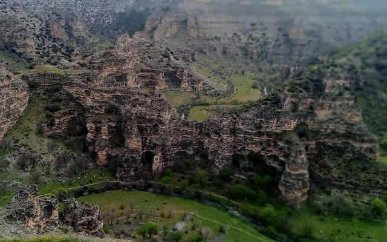
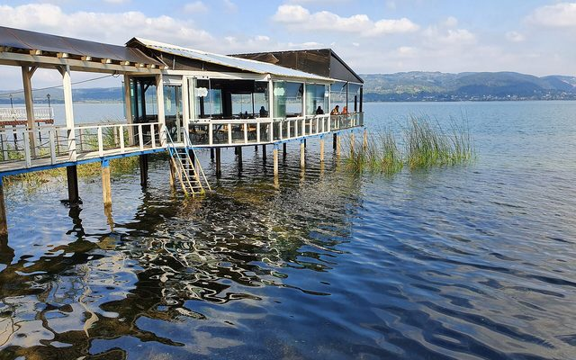
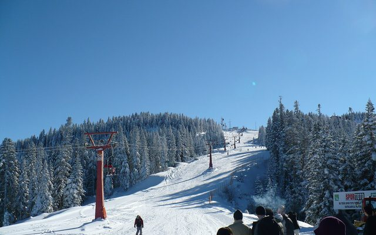
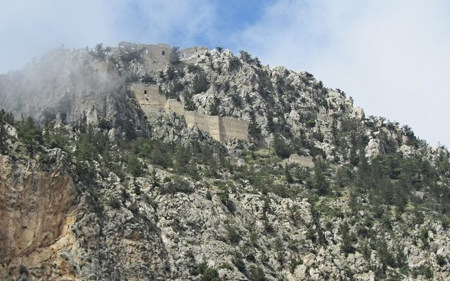

Kültür Varlıkları
探索
地图
路线
文明
⭐ 镇馆之宝
🏞 自然
时间线
我的清单
询问导览
🎟 博物馆通票
🌐 中文
TR
EN
中文
हिन्दी
ES
عربي
日本語
DE
Kültür Varlıkları
🏞 自然与探险
土耳其和北塞浦路斯的瀑布、峡谷、湖泊、滑雪场、漂流地点和徒步路线。
全部
瀑布 (10)
峡谷 (8)
湖泊 (18)
滑雪场 (8)
漂流 (5)
徒步路线 (9)
自然景观 (9)
瀑布
卡普兹巴什瀑布群
开塞利
吉尔莱维克瀑布
埃尔津詹
哈尔比耶瀑布
哈塔伊
塔特勒贾瀑布群（埃尔费莱克）
锡诺普
库尔顺卢瀑布自然公园
安塔利亚
托尔图姆瀑布
埃尔祖鲁姆
杜登瀑布
安塔利亚
穆拉迪耶瀑布
凡城
苏乌奇图瀑布
布尔萨
马纳夫加特瀑布
安塔利亚
峡谷

乌卢贝峡谷自然公园
乌沙克
塔泽峡谷
安塔利亚
戈伊努克峡谷
安塔利亚
瓦拉峡谷
卡斯塔莫努
科普吕吕峡谷国家公园
安塔利亚
萨克勒肯特峡谷
穆拉
霍尔马峡谷
卡斯塔莫努
黑暗峡谷
埃尔津詹
湖泊
七湖国家公园
博卢
乌尊湖
特拉布宗
内姆鲁特火山口湖
比特利斯
凡湖
凡城
哈扎尔湖
埃拉泽
图兹湖（盐湖）
阿克萨赖
埃伊尔迪尔湖
伊斯帕尔塔
宾格尔浮岛
宾格尔
巴法湖自然公园
穆拉
恰尔德尔湖
阿尔达汉
格尔久克火山口湖自然公园
伊斯帕尔塔
梅凯湖
科尼亚
科伊杰伊兹湖
穆拉
萨尔达湖
布尔杜尔

萨潘贾湖
萨卡里亚
贝伊谢希尔湖国家公园
科尼亚
阿班特湖自然公园
博卢
黑湖（博尔奇卡）
阿尔特温
滑雪场
乌卢达山滑雪场
布尔萨

伊尔加兹滑雪场
卡斯塔莫努
卡尔塔尔卡亚滑雪场
博卢
卡尔泰佩滑雪场
科贾埃利
埃尔吉耶斯滑雪场
开塞利
帕兰德肯滑雪场
埃尔祖鲁姆
萨勒卡默什滑雪场
卡尔斯
达夫拉兹滑雪场
伊斯帕尔塔
漂流
乔鲁赫河
阿尔特温
弗尔蒂纳溪
里泽
扎曼特河
阿达纳
梅伦河
迪兹杰
达拉曼河
穆拉
徒步路线

凯里尼亚山地步道
吉尔内（凯里尼亚）
利西亚之路
穆拉
卡奇卡尔山脉
里泽
卡里亚之路
穆拉
圣保罗之路
安塔利亚
弗里吉亚之路
埃斯基谢希尔
艾弗利亚·切莱比之路
屈塔希亚
苏丹之路
埃迪尔内
赫梯之路
乔鲁姆
自然景观
卡尔帕斯国家公园与金沙滩
伊斯凯莱（特里科莫）
卡拉因洞穴
安塔利亚
地狱之口洞穴
宗古尔达克
杜普尼萨洞
克尔克拉雷利
燃烧之石（喀迈拉）
安塔利亚
贝什帕尔马克山脉（五指山）
吉尔内（凯里尼亚）
锡利夫凯天堂与地狱天坑
梅尔辛
锡利夫凯阿斯特姆洞
梅尔辛
阿拉加迪海龟海滩
吉尔内（凯里尼亚）
🏛
探索
🗺
地图
🧭
路线
♡
我的清单